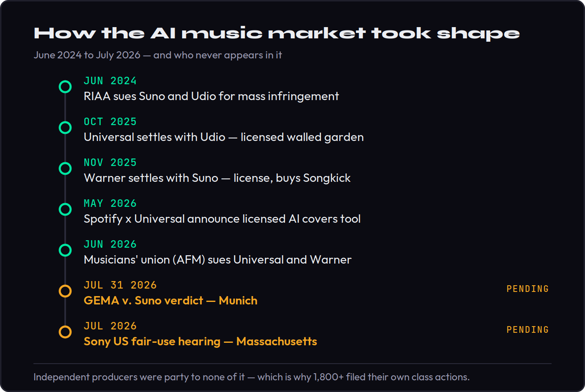
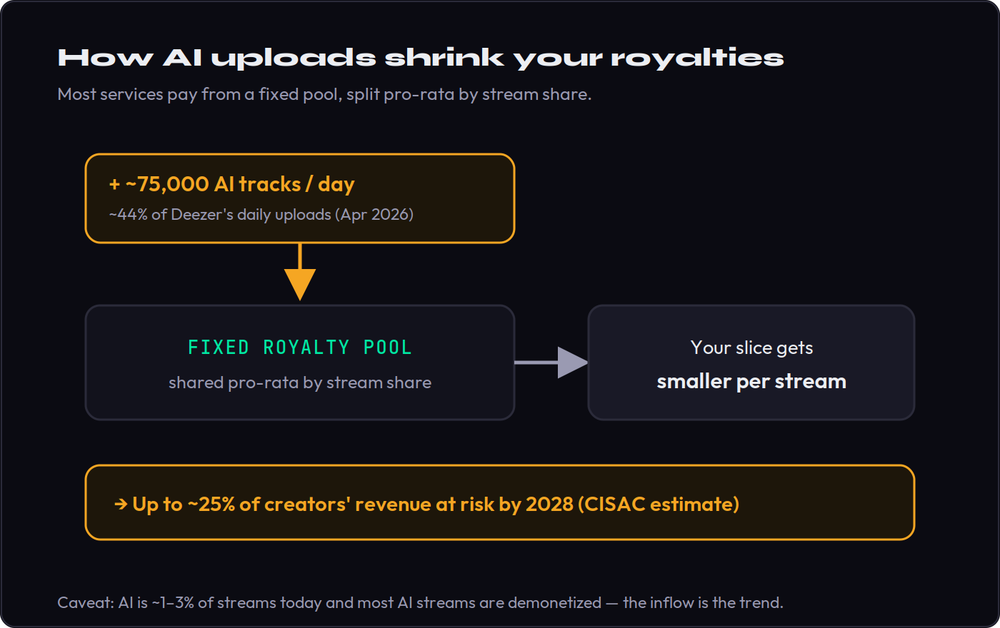

AI music runs on the same two copyrights every record does — the master (the recording) and the publishing (the song underneath it). In 2026 the major labels stopped suing the big AI companies and started licensing to them, which turned a copyright war into a series of paid deals. Those deals are real money — for the labels. If you are an independent producer, you were not in the room, your music can still be swept into a training set, and a track that is mostly AI-generated may not even be copyrightable, which quietly limits what you can collect. This guide is the defensive playbook: what is actually happening, who gets paid, and the moves you can make from outside the room.
This is general information, not legal advice. Licensing and copyright outcomes turn on your exact facts — for a real release, consult a qualified music attorney. Every dated figure below is an industry-reported number, accurate as of June 2026; treat anything dated as “verify current,” because this field is moving weekly. Where cases are unresolved we say so — the legal posture is reported or alleged, never our verdict.
Between 2024 and 2026 the music industry changed its mind in public. The same three major labels that sued Suno and Udio for “mass infringement” turned around and signed licensing deals with them — and with Spotify — for AI tools they had spent a year calling theft. The headlines frame this as the industry “solving” AI music responsibly. From where an unsigned producer sits, it looks more like a small number of very large companies dividing up a new revenue stream and leaving everyone else to figure out the consequences.
That gap — between what the deals do for catalog owners and what they do for the person actually making music — is the whole subject of this piece. You do not need to become a lawyer. You do need to understand four things: which copyrights AI uses and who controls them, whether you can own what you make with these tools, how the licensing deals actually treat you, and how the flood of AI uploads affects the royalty pool you get paid from. Get those straight and the defensive moves at the end are obvious.
Where You Actually Stand: The 60-Second Reality Check
Start with the timeline, because the sequence tells the story. In June 2024 the RIAA, acting for Universal, Sony and Warner, sued Suno and Udio, alleging they had trained on millions of copyrighted recordings without permission. For about a year the posture was war. Then it fractured. Universal settled with Udio in October 2025 and agreed to build a licensed “walled-garden” platform. Warner settled with Suno in November 2025, took a reported multi-million-dollar payment, struck a licensing deal, and even acquired Suno’s concert-discovery platform Songkick. In May 2026 Spotify and Universal announced a licensed AI covers-and-remixes tool. The war became a marketplace.
Why the reversal? Two forces. First, leverage: U.S. copyright law allows statutory damages of up to $150,000 per willfully infringed work, and the labels alleged millions of works — an existential number for any startup, and enough to force Suno and Udio to the table. Second, money: once it was clear AI music was not going away, owning a licensed slice of it beat losing a slow war of attrition. So the majors converted maximum legal pressure into licences and equity, the same move they ran on streaming a decade earlier. That is rational for a catalog owner. It just does nothing for a rights holder too small to have been a credible plaintiff in the first place.

Now notice who never appears in that timeline. Every settlement, every licence, every revenue share was negotiated by entities that own large catalogs. Independent artists were party to none of it — which is precisely why, as the majors were settling, more than 1,800 independent musicians backed separate class actions against both Suno and Udio, on the explicit argument that the major-label deals do nothing to protect smaller rights holders. Sony, for its part, has refused to settle with either company and is betting on a court ruling instead. The point for you is not to pick a side in someone else’s lawsuit. It is to recognize that the protections being built are being built around catalogs, not around you — and to act accordingly.
Sony’s holdout is its own signal. By declining to license and pushing for a court ruling instead, the one major still fully in litigation is betting that a judge will find AI training on its recordings to be infringement — an outcome that would hand every rights holder, including you, a far stronger negotiating position than any private settlement ever could. Whether that bet pays off is one of the live tests later in this guide. The takeaway now is that even among the majors there is no consensus, which means the rules are genuinely unsettled — and unsettled rules are exactly when getting your own house in order matters most.
The Two Copyrights, and Who AI Pays For Each
Everything in AI licensing rests on a distinction most producers already half-know but rarely apply: every piece of recorded music is two copyrights, not one. The master is the specific recording — the actual audio, usually owned by a label or the artist. The publishing is the underlying composition — the melody, chords and lyrics, owned by the songwriters and their publisher. A normal sample needs a yes from both. AI touches both too, in two places: when a model is trained on a recording it ingests the master and the composition, and when a model generates an output it can produce something that competes with both.
Make it concrete. Say a model trained on a classic soul record now generates a track with the same feel. The original recording — the master — was ingested into the training set; that is the label’s asset. The original song — the composition — belongs to the writers and their publisher. When a label signs an AI deal “for its catalog,” it is putting both of those assets on the table where it controls them. Two rights, potentially two sets of owners, and an AI company that touched both. Hold that picture, because it is the same structure whether we are talking about training data going in or generated audio coming out.

This is why a label can license “its catalog” to an AI company: it controls those masters and often the publishing too. But controlling the copyright is not the same as having paid everyone whose work is inside it — a distinction that became a lawsuit, which we will get to. For you, the two-copyright structure cuts the other way, and in your favor if you are organized. As an independent, you may own both your master and your publishing outright. That is real leverage: nobody can license your recording to a training set if you hold the rights and have reserved them. But leverage only exists if you have registered your works and can prove what you own. An unregistered track with messy metadata has rights in theory and protection in practice that is close to zero.
Can You Even Own What the AI Makes?
Here is the question almost no ranking page answers cleanly, and it is the one that matters most for your money: if you generate a track with an AI tool, do you own it? The commercial answer and the copyright answer are different, and conflating them is how producers get hurt. Commercially, most major generators grant paid subscribers the right to use and monetize their outputs — so you can usually release the track. But copyright ownership is a separate thing, and on that, 2026 brought two clarifying decisions that point the same way.
In February 2026 a Munich court ruled that a fully AI-generated work — in that case a logo produced from a long text prompt — gets no copyright, because the AI, not the human, made the essential creative choices. That mirrors the United States Copyright Office’s 2025 guidance, which requires human authorship for protection and treats purely machine-generated output as unprotectable. Translate that to a track: the portions of your song that the AI generated on its own may not be copyrightable at all. You could be free to release a track you cannot actually own — meaning you may struggle to register it, to collect the publishing and mechanical royalties that flow through registration, or to stop anyone else from using the identical output.
Royalty collection runs on registration, and registration runs on authorship. If a track is judged to be substantially AI-authored, the path to registering it — and therefore to collecting on it through your PRO and the MLC — narrows. The fix is not to avoid the tools; it is to make sure a human clearly authored the parts that matter, and to be able to show it.
It is worth being precise about what “human authorship” means here, because the line is not where most people assume. Typing an elaborate prompt does not make you the author in the eyes of the Copyright Office; the office has been explicit that prompts function more like instructions to a contractor than like authorship, because you do not control the specific expressive output. What counts is the work you do on the result: arranging it, performing over it, rewriting its lyrics, comping and editing takes, making the thousand small expressive decisions that turn a generation into a record. A track that is mostly your craft layered on an AI sketch is a very different copyright proposition from one that is a single prompt and an export.
The practical move is to keep your human fingerprints on the work and document them. Your arrangement decisions, your performance, the lyrics you wrote, the editing and production choices you made by hand — these are the authored elements that survive. The more of the track is genuinely yours, the more of it you can register and defend. A one-line prompt is not authorship; a song you shaped, performed and finished is. Save your session files and dated stems the way you would keep receipts.
The Deals, Decoded
Strip away the press releases and the three landmark 2026 deals share one shape: a walled garden where opted-in major-label artists may get paid and everyone else is either excluded or treated as raw material. Read them for what they actually grant, not how they are framed.
The Spotify × Universal deal, announced May 21, 2026, lets Premium subscribers create licensed AI covers and remixes of participating Universal artists, as a paid add-on, with a revenue share for those artists. It is built on the language of “consent, credit and compensation.” But read the fine print: as of mid-June the tool is not live, no price has been set, no launch date is public, and the revenue-share percentage has not been disclosed — and it covers only Universal artists who opt in. Sony and Warner are not part of this particular tool. If you are independent, there is no opt-in box for you to tick.
The Suno × Warner deal, from November 2025, promised “new, more advanced and licensed models” in 2026, with the existing models to be deprecated when they arrived. As of June 2026 that licensed model still has not shipped; Suno’s unlicensed V5 continues to power the platform, and the only release since was a v5.5 update adding voice capture and personalization — not the licensed model. The licensed path is being promised faster than it is being delivered, which is worth remembering whenever a tool tells you it has “gone legit.” The Universal × Udio settlement points the same way: a licensed, walled-garden platform where outputs stay inside the system.
“Walled garden” is worth decoding, because it is the shape every one of these deals is taking. It means generation happens inside the platform, on licensed catalog, with outputs that stay in the system and revenue that flows back to the catalog owner — a controlled environment, not an open tool. For a major-label artist who opts in, that can mean a new royalty line. For an outside producer, it mostly means the licensed, “safe” version of AI music is a garden you are not planted in. And the timeline cuts against the marketing: licensed models keep being announced for “next year” while the unlicensed ones keep doing the actual work.
So what do these deals cover for you? Unless you are a Universal or Warner artist who has opted in, the honest answer is: nothing. They license catalogs the majors control. They do not pay independents, and they do not stop an unlicensed model from having already trained on music like yours. “It’s licensed now” is a statement about the label’s rights, not yours.
That is not an argument against the deals existing; a licensed market is better than a lawless one, and over time it may create real opt-in revenue for more artists. It is an argument for reading them clearly. When a platform announces it has “gone legitimate,” ask the only questions that affect you: legitimate for whom, paying whom, and on what disclosed terms. Until those have concrete answers, treat “licensed” as a fact about someone else’s balance sheet.
“Licensed” Doesn’t Mean You’re Protected
If you want a single illustration of the gap between “the rights were licensed” and “the people who made the music got paid,” it arrived on June 5, 2026. The American Federation of Musicians — the union for session and instrumental musicians — sued Universal and Warner in federal court in New York, alleging the labels licensed recordings their members had played on to Suno and Udio without paying or crediting those musicians, and refused to disclose which recordings were being used. The union argues this triggered the “new use” clause of its collective bargaining agreement, which requires the labels to compensate members when their recorded work is put to a new commercial use. The labels called the suit “unproductive.”
Set aside who is right; the case is in its early stages and these are allegations, not findings. The structural lesson stands regardless of outcome. The labels protected their own interests and created a new revenue stream through the settlements and licences. The session players whose performances are inside those recordings — the humans whose talent the models learned from — say they were left out. That is the clearest possible version of the thesis running through this entire piece: a licence at the top of the chain does not put money in the hands of the people at the bottom of it. The 1,800-plus independents in their own class actions are making a parallel argument from outside the union entirely.
The legal hook is specific, and worth understanding even in outline. Session and instrumental musicians work under a collective bargaining agreement whose “new use” clause says that when a recording they played on is put to a use that did not exist when they were hired, they are owed payment again. The union’s argument is that feeding those recordings into an AI training set is exactly such a new use — and that the labels both skipped the payment and refused to disclose which recordings were involved. The independents’ class actions make a cousin of that argument from outside any union: that their copyrighted recordings were used to build commercial products without licence or compensation, and that the majors’ settlements neither cover nor speak for them.
For an independent producer the takeaway is concrete. Do not read “this AI platform is now licensed” as “and therefore my interests are handled.” If you are ever offered an opt-in — to a streaming AI feature, to a distributor’s AI program, to any deal that touches your recordings — read it before you sign, and look specifically for whether a split is actually defined and disclosed. “Compensation” with no published number is a promise, not a payment.
The Quiet Threat: Royalty Dilution
The lawsuits get the headlines, but the thing most likely to touch your bank account is duller and harder to sue over: dilution. Most streaming services pay from a shared pool, divided pro-rata by stream share. Every track in the pool takes a sliver of everyone else’s slice. So the relevant number is not whether AI tracks are good; it is how many of them are entering the pool you get paid from.
The mechanics are worth holding precisely, because they explain why volume alone hurts. On the major services your streams do not earn a fixed per-stream rate; they earn a share of a fixed pot, sized by the platform’s revenue and divided by your share of total qualifying streams. Most services also set a small threshold — on the order of a thousand streams a year per track — below which a track earns nothing and its would-be royalties stay in the pool. Flood the catalog with millions of tracks that each scrape a handful of streams and you do two things at once: you enlarge the denominator everyone is divided by, and you feed a pool of forfeited micro-royalties that gets redistributed upward. Neither requires a single AI track to be any good.
That number is large and climbing. Deezer reported in April 2026 that roughly 75,000 fully AI-generated tracks were being uploaded to its platform every day — about 44% of its daily uploads, more than two million a month — up from around 10,000 a day at the start of 2025. The reassuring caveat is that AI is still only a low single-digit share of actual streams, and Deezer says about 85% of AI streams are flagged as fraudulent and demonetized, with AI tracks pulled from its algorithmic recommendations and editorial playlists specifically to limit pool dilution. The unsettling part is the trajectory and the studies: a CISAC-commissioned analysis put up to a quarter of human creators’ revenue at risk by 2028, on the order of several billion euros.

Platforms are reacting, which both helps you and signals how seriously they take the risk. Spotify removed roughly 75 million tracks it classed as AI spam in late 2025; Bandcamp banned AI-generated music outright; Qobuz began tagging AI in early 2026; Deezer pulls AI from its recommendations. Listener data explains the caution: in Deezer’s surveys, 97% of people could not reliably tell AI from human music, and about 80% said they want AI clearly labeled. The pool is not collapsing tomorrow. But the direction is set, and the producers who will be fine are the ones who are registered, labeled and discoverable on their own merits rather than buried in an undifferentiated flood.
For your release strategy the lesson is not despair, it is differentiation. In a catalog filling with interchangeable AI output, the things that have always mattered — a real audience, a recognizable voice, playlist and editorial relationships, music people actively seek out rather than passively receive — become the moat. Dilution punishes anonymity and rewards artists who give listeners a reason to choose them on purpose, which is exactly the position that clean registration and good metadata exist to protect.
The Live Tests That Could Change Everything
Two court decisions due in the same window could reset the rules under which all of this operates, and both land while this guide is fresh. In Germany, the Munich Regional Court is scheduled to rule on July 31, 2026 in GEMA’s case against Suno. A ruling for GEMA would be the first major European decision that AI platforms must license the music they train on — following the same court’s November 2025 ruling against OpenAI, which held that a model’s “memorization” of lyrics is a copyright-relevant reproduction not covered by the EU’s text-and-data-mining exception. As of now that verdict is pending; we are not predicting it.
That German case does not come from nowhere. In November 2025 the same Munich court ruled against OpenAI in a related GEMA action, finding that when a model reproduces memorized song lyrics it is making a copyright-relevant reproduction — one not shielded by the EU’s text-and-data-mining exception once rights have been reserved. Reserving those rights, in turn, has to be done by machine-readable means, which is why the opt-out mechanics in your playbook matter: a robots.txt rule or a TDM-reservation signal is the difference between a reservation a court will recognize and a line of terms that a December 2025 German appeals ruling held is not enough. The pieces connect — the EU is assembling a system in which you can say no to training, but only if you say it in a way machines can read.
In the United States, the question is fair use. Suno has moved for summary judgment arguing that training on copyrighted recordings is transformative fair use, and a key hearing in Sony’s case is reported for July 2026 in the District of Massachusetts. A ruling that training is fair use would gut the labels’ leverage and cheapen future licences; a ruling that it is infringement would force every AI music company to license or rebuild. Universal and Sony have also moved to expand the Suno complaint, alleging that more than 61,000 additional recordings were ingested without authorization — a motion that, if granted, multiplies the potential damages. All of this is unresolved and adversarial; treat it as reported litigation, not settled law, and certainly not as legal advice for your own situation.
The reason a producer should care about pending cases is timing. The outcomes will define what AI music costs, what gets licensed, and whether independents ever get a seat. You cannot control any of it. What you can do is make sure that whichever way the rulings go, your own rights are registered, your authorship is documented, and your music is positioned to be paid — which is exactly the playbook below.
Your Defensive Playbook
None of the above requires you to quit AI tools or hire a litigator. It requires you to do a handful of unglamorous things that put you on the right side of every trend in this piece. Here is the order I would do them in.
One principle ties these together: control what you can, and accept that you cannot control the rest. You cannot decide how the lawsuits end, whether Spotify’s tool ever pays independents, or how fast the AI flood grows. You can decide whether your work is registered, whether your authorship is documented, whether your training opt-out is machine-readable, and whether your splits are clean. Every one of those is cheap relative to the downside of skipping it, and every one of them pays off no matter which way the unsettled questions break.
- Register everything, and keep your metadata clean. Get your songs into your PRO (ASCAP, BMI or SESAC) and your compositions into the MLC, with accurate writer and publisher splits. When licensed-AI money or any pool royalty flows, it routes by registration and market-share data — unregistered or mis-tagged work is simply unpaid work.
- Preserve and document human authorship. On anything you make with AI, keep your own arrangement, performance, lyrics and editing front and center, and save the dated session files and stems that prove it. This is what keeps a track copyrightable, and therefore collectable.
- If you publish online, reserve your rights the machine-readable way. In the EU, opting out of AI training has to be done by machine-readable means — a robots.txt rule, a TDM-Reservation HTTP header, or an ai.txt file — not a line in your terms of use, which a December 2025 German appeals ruling held is not enough. Note the limits: the location-based signals can also block search indexing, and the United States has no equivalent statutory opt-out, so this is a real but partial lever.
- Label AI use honestly on your distributor and DSPs. Platforms increasingly require disclosure and demonetize or remove mislabeled AI. Honest labeling keeps you inside the rules rather than caught by a spam filter.
- Read every opt-in before you sign it. “Consent, credit, compensation” only pays you if you opt in and the split is actually defined. If a deal touches your recordings and the percentage is not disclosed, treat it as unfinished.
- Keep your splits in writing. Co-writes, samples, interpolations — pin them down on paper before release. Clean splits are what let collection actually reach you when the money moves.
And when it genuinely gets complicated — an uncertain sample, an AI-derived release you cannot quite place, a clearance you cannot resolve on your own — that is the point where a clearance partner or a music attorney earns the fee. We are building tooling to make those calls less painful for independent producers; if you want to hear when it lands, the Producer’s Briefing is where we will announce it. Until then, the moves above are the difference between being swept along by this market and standing on your own rights inside it.
Put It Into Practice: 3 Exercises
- Pick one track you have released. Confirm it is registered with your PRO and that the composition is registered with the MLC, with correct writer and publisher splits.
- Open the metadata your distributor sent to stores and check that artist, writer and ISRC details are accurate and consistent.
- Write down any gap you find. An unregistered or mis-tagged track is the single most common reason an independent leaves money on the table — fix it before you release the next one.
- Take an AI-assisted track and list every element: the prompt, the generated audio, and everything you did — arrangement, performance, lyrics, edits, mix decisions.
- Mark which elements are human-authored and which are purely machine-generated.
- Decide honestly whether your human contribution clears the authorship bar, and write a short note describing it. That note, plus your session files, is your evidence if ownership is ever questioned.
- On your artist site, add a robots.txt rule for AI crawlers and either a TDM-Reservation HTTP header or an ai.txt file declaring that your content is reserved against text-and-data mining.
- Verify the signal is actually machine-readable — check the header is served and the files are reachable — rather than relying on a line in your terms of use.
- Write down what this does and does not do: it signals an EU opt-out and may also affect search indexing, but it is not a US statutory protection and cannot undo training that already happened. Knowing the limits is the point.
Frequently Asked Questions
It depends on the tool's terms of service and on how much of the track a human actually authored. Most major generators grant paid-tier subscribers commercial rights to their outputs, so in practice you can usually release and monetize the track. But ownership in the copyright sense is separate: under current U.S. and EU guidance, the purely AI-generated portions of a track are not protected by copyright at all, because a human did not make the creative choices. So you may be free to use the track while still not owning it in a way that lets you stop anyone else from using the same output. This is general information, not legal advice — for a specific release, talk to a music attorney.
Generally yes, provided the tool's terms allow commercial use and your track does not infringe an existing recording or composition. The catch in 2026 is labeling and quality control: platforms increasingly require you to disclose AI use, and they actively demonetize or remove AI tracks flagged as spam or stream fraud. Distributors can reject or strike AI uploads that break their rules. Releasing is allowed; releasing carelessly is what gets tracks pulled.
Only the parts a human authored. The U.S. Copyright Office's 2025 guidance and a February 2026 Munich court decision both landed in the same place: a work whose essential creative choices were made by the AI is not eligible for copyright. Your human contribution — the arrangement, the performance, the lyrics you wrote, the editing and production decisions — can be protected, and the more of it there is, the more of the track you can register and defend. A prompt alone is not authorship. Document what you did by hand.
The headline licensing deals pay the labels. Whether an individual artist sees any of it depends on opting in and on a revenue split that, in several cases, has not been disclosed. The clearest sign of the gap is that in June 2026 the American Federation of Musicians sued Universal and Warner, alleging the labels licensed recordings their members played on to Suno and Udio without paying or crediting those session musicians. So 'the labels got paid' and 'the artists got paid' are not the same statement.
GEMA, Germany's music-rights society, is suing the AI music platform Suno over training on copyrighted songs without a licence. A verdict is scheduled for July 31, 2026 at the Munich Regional Court. It matters because it could be the first major European ruling that AI platforms must license the music they train on — following the same court's 2025 decision against OpenAI. The outcome will help set the rules every AI music tool, and everyone who releases through them, has to live under.
Indirectly, and it is worth understanding the mechanism rather than panicking. Most streaming services pay from a shared pool divided pro-rata by stream share, so every track in the pool dilutes everyone else's slice a little. AI uploads are arriving at extraordinary volume — Deezer reported about 75,000 AI tracks a day in April 2026, roughly 44% of its daily uploads. AI is still only a low single-digit share of actual streams, and a large majority of AI streams are flagged as fraudulent and demonetized, but the long-run dilution risk is real: one industry study put up to a quarter of creators' revenue at risk by 2028.
In the EU you can reserve your rights against text-and-data mining, but it has to be done by machine-readable means — a robots.txt rule, a TDM-Reservation HTTP header, or an ai.txt file — not just a line buried in your website's terms. A December 2025 German appeals ruling held that a natural-language opt-out is not enough. The United States has no equivalent statutory opt-out, and the underlying fair-use question is still unresolved in court. Note that the location-based signals can also tell search engines to stop indexing, so apply them deliberately.
Not necessarily. The risk is rarely in using the tools to sketch ideas, generate stems, or speed up production. The risk is in releasing AI-heavy tracks without understanding three things: whether you actually own the result, whether you have labeled it honestly, and how it sits inside a royalty pool that is filling with similar tracks. Used with the playbook above — human authorship, clean registration, honest labeling — AI is a tool. Used blindly, it is a liability.